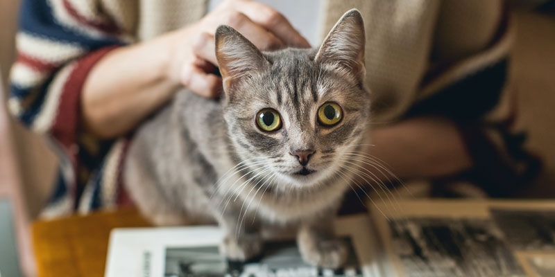

Their Habitat
 Domestic cats descend from African wildcats, but their natural habitat has become much more varied due to their spread worldwide as domestic animals. However, their wild ancestors, such as the African wildcat (Felis silvestris lybica), are native to sub-Saharan Africa and the Middle Eastern regions. These wild cats prefer various habitats such as savannas, steppes, open forests, and rocky areas, where they can find prey and take shelter from threats. They are skilled hunters and have adapted their hunting habits and behavior based on the environment they live in.
Domestic cats descend from African wildcats, but their natural habitat has become much more varied due to their spread worldwide as domestic animals. However, their wild ancestors, such as the African wildcat (Felis silvestris lybica), are native to sub-Saharan Africa and the Middle Eastern regions. These wild cats prefer various habitats such as savannas, steppes, open forests, and rocky areas, where they can find prey and take shelter from threats. They are skilled hunters and have adapted their hunting habits and behavior based on the environment they live in.
Physical Characteristics
 Cats are characterized by slender, muscular bodies, proportionate heads with relatively short muzzles, large round eyes, mobile ears, and retractable claws on their paws. Their fur can vary greatly in length, color, and pattern, and they can have a wide range of eye colors. These physical characteristics make them suitable for hunting, climbing, and living both indoors and outdoors.
Cats are characterized by slender, muscular bodies, proportionate heads with relatively short muzzles, large round eyes, mobile ears, and retractable claws on their paws. Their fur can vary greatly in length, color, and pattern, and they can have a wide range of eye colors. These physical characteristics make them suitable for hunting, climbing, and living both indoors and outdoors.
Social Behavior
Cats exhibit complex social behavior, although they are generally considered independent animals. Some key points include: Territoriality: Cats are territorial and mark their territory with scent signals. Communication: They use a variety of signals, including meows, hisses, and body language. Grooming: They engage in daily grooming, both to stay clean and to reinforce social bonds. Social play: They can play with each other or with humans, showing trust and affection. Social hierarchy: In groups of cats, social hierarchies may emerge, although fluidly. Bonds with humans: Domestic cats can develop strong emotional bonds with their human owners, seeking physical contact and interaction. In short, cats can exhibit a rich and varied social behavior, both with other cats and with humans, although they maintain their independence as an integral part of their nature.
What They Eat

Cats are obligate carnivores, which means their natural diet consists primarily of meat. Foods that cats eat include: Meat: Fresh meat or raw meat is an essential part of a cat's diet. They can eat beef, chicken, turkey, lamb, and other types of meat. Fish: Some cats enjoy fish, which can be a source of protein and omega-3 fatty acids. However, fish should not make up the majority of their diet due to the risk of mercury toxicity and nutritional imbalances. Commercial cat foods: There are dry and wet foods formulated specifically for cats' nutritional needs. These foods may contain meat, fish, vitamins, minerals, and other essential nutrients. Homemade diet: Some owners choose to prepare their cats' meals at home, ensuring to include a proper balance of proteins, fats, carbohydrates, vitamins, and minerals. It is important to note that cats have specific nutritional needs and cannot survive long without a balanced diet. It is always advisable to consult a veterinarian to determine the best diet for your cat and ensure they receive all the nutrients they need.